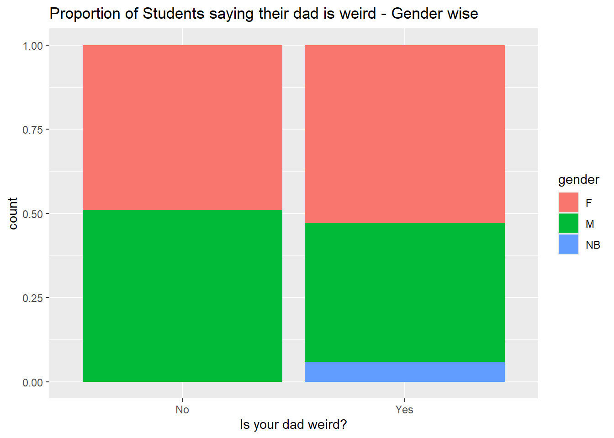
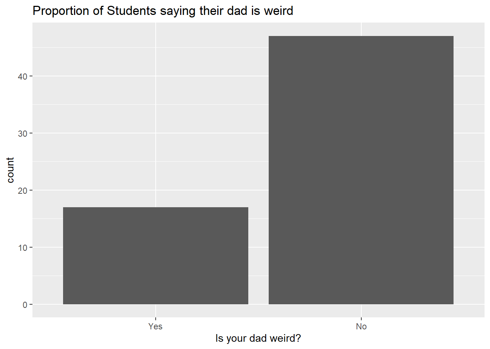

── Attaching core tidyverse packages ──────────────────────── tidyverse 2.0.0 ──
✔ dplyr 1.1.4 ✔ readr 2.1.5
✔ forcats 1.0.0 ✔ stringr 1.5.2
✔ ggplot2 4.0.0 ✔ tibble 3.3.0
✔ lubridate 1.9.4 ✔ tidyr 1.3.1
✔ purrr 1.1.0
── Conflicts ────────────────────────────────────────── tidyverse_conflicts() ──
✖ dplyr::filter() masks stats::filter()
✖ dplyr::lag() masks stats::lag()
ℹ Use the conflicted package (<http://conflicted.r-lib.org/>) to force all conflicts to become errors
library(mosaic)
Registered S3 method overwritten by 'mosaic':
method from
fortify.SpatialPolygonsDataFrame ggplot2
The 'mosaic' package masks several functions from core packages in order to add
additional features. The original behavior of these functions should not be affected by this.
Attaching package: 'mosaic'
The following object is masked from 'package:Matrix':
mean
The following objects are masked from 'package:dplyr':
count, do, tally
The following object is masked from 'package:purrr':
cross
The following object is masked from 'package:ggplot2':
stat
The following objects are masked from 'package:stats':
binom.test, cor, cor.test, cov, fivenum, IQR, median, prop.test,
quantile, sd, t.test, var
The following objects are masked from 'package:base':
max, mean, min, prod, range, sample, sum
library(vcd)
Loading required package: grid
Attaching package: 'vcd'
The following object is masked from 'package:mosaic':
mplot
library(visStatistics)library(resampledata)
Attaching package: 'resampledata'
The following object is masked from 'package:datasets':
Titanic
library(ggformula)library(infer)
Attaching package: 'infer'
The following objects are masked from 'package:mosaic':
prop_test, t_test
library(openintro)
Loading required package: airports
Loading required package: cherryblossom
Loading required package: usdata
Attaching package: 'openintro'
The following object is masked from 'package:mosaic':
dotPlot
The following objects are masked from 'package:lattice':
ethanol, lsegments
Rows: 64
Columns: 2
$ college <fct> SMI, SMI, SMI, SMI, MIT, MIT, MIT, SMI, SMI, SMI, SMI, SM…
$ is_dad_weird <fct> No, No, No, Yes, No, No, No, No, Yes, Yes, Yes, Yes, No, …
weirddad_clean %>%drop_na() %>%gf_bar(~college, fill =~is_dad_weird, position ="fill") %>%gf_labs(x ="Is your dad weird?",title ="Propotion of SMI vs MIT saying their dad is weird" )
Inference
more SMI students think their dad is weird than MIT students.
weirddad %>%drop_na() %>%gf_bar(~is_dad_weird, fill =~gender, position ="fill") %>%gf_labs(x ="Is your dad weird?",title ="Proportion of Students saying their dad is weird - Gender wise" )

Inference
Gender does not appear to influence whether students think their dad is weird.
Males and females show almost equal proportions saying “Yes” or “No.”
This pattern shows the idea that perception of dad weirdness is gender-neutral — both male and female students perceive their fathers similarly.
# A tibble: 2 × 2
# Groups: is_dad_weird [2]
is_dad_weird n
<fct> <int>
1 Yes 17
2 No 47
glimpse(weirddad_clean)
Rows: 64
Columns: 2
$ college <fct> SMI, SMI, SMI, SMI, MIT, MIT, MIT, SMI, SMI, SMI, SMI, SM…
$ is_dad_weird <fct> No, No, No, Yes, No, No, No, No, Yes, Yes, Yes, Yes, No, …
weirddad_clean %>%summarize(prop =mean(is_dad_weird =="Yes"), n =n())
prop n
1 0.265625 64
Inference
The difference in the proportion of students saying “Yes, my dad is weird” in college is statistically significant.
Across both colleges (MIT and SMI combined), about 26.6% of students said their dad is weird.
This means that most students (73%) do not consider their dad weird, suggesting that “weird dads” are a minority perception overall.
weirddad_clean %>%drop_na() %>%gf_bar(~is_dad_weird, position ="dodge") %>%gf_labs(x ="Is your dad weird?",title ="Proportion of Students saying their dad is weird" )

mosaic::binom.test(~is_dad_weird, data = weirddad_clean, success ="Yes")
data: weirddad_clean$is_dad_weird [with success = Yes]
number of successes = 17, number of trials = 64, p-value = 0.0002269
alternative hypothesis: true probability of success is not equal to 0.5
95 percent confidence interval:
0.1629761 0.3908761
sample estimates:
probability of success
0.265625
mosaic::binom.test(~is_dad_weird, data = weirddad_clean, success ="Yes") %>% broom::tidy()
Both college and gender do not have a significant effect on whether their dad is weird. However, the difference in proportions for the “weird dad” responses is statistically significant.